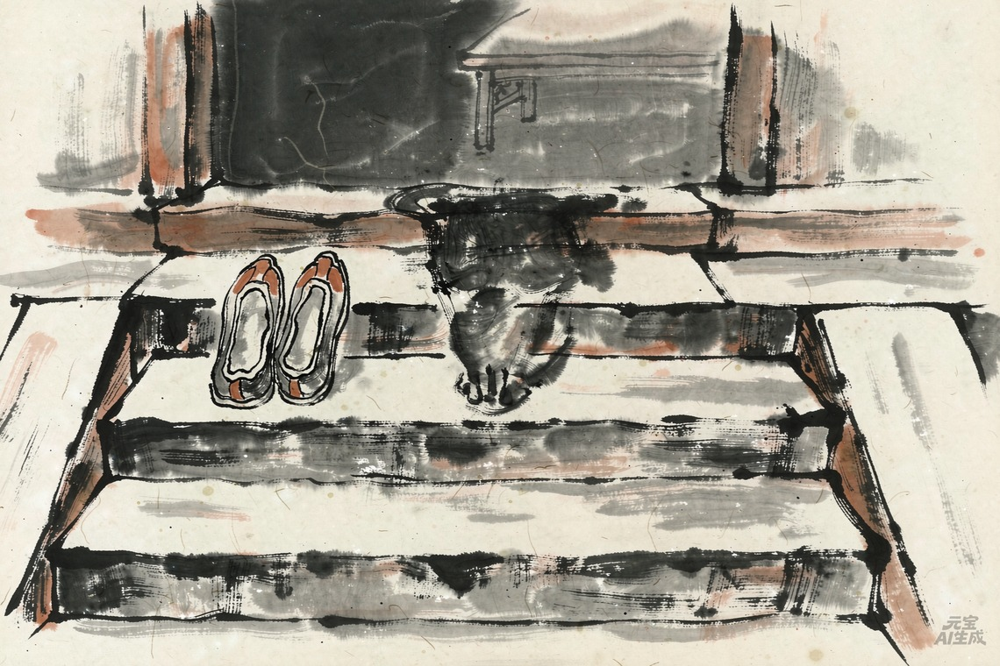
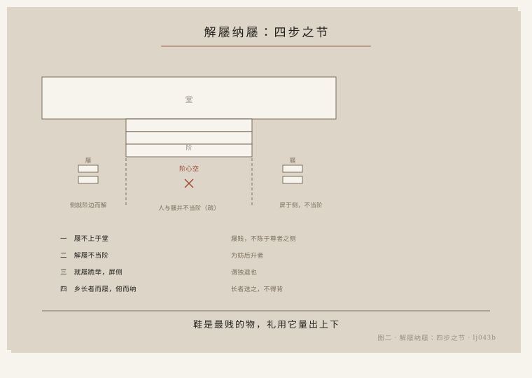

曲礼上 · 一·四十五 · 第 43 课
这一节讲脱鞋穿鞋：侍坐于长者，鞋不穿到堂上；脱鞋不许对着台阶；去穿鞋时，跪着取起，退到一侧；长者送行时，要面向长者穿鞋，跪着把鞋挪近，俯身把脚伸进去。
说什么事：侍坐于长者，屦不上于堂；解屦不敢当阶；就屦，跪而举之，屏于侧；乡长者而屦，跪而迁屦，俯而纳屦。
落在哪一层：教。上节讲在堂上的容止，这节讲堂阶上下这一双鞋。
为何编在此位：一·四十四讲「在上如何」，此节讲「上下之间如何」；一阶之隔，礼最密。
【经】侍坐於長者，屨不上於堂。解屨不敢當階。就屨，跪而舉之，屏於側。鄉長者而屨，跪而遷屨，俯而納屨。
屦不上于堂 郑注：「屦贱，空则不陈于尊者之侧。」疏：「长者在堂，而侍者屦贱，故脱于阶下，不著上堂。若长者在室，则侍者得著屦上堂，而不得入室。」
解屦不敢当阶 郑注：「为妨后升者。」疏：「人与屦并不当阶，侧就阶边而解。」
就屦 郑注：「谓独退也。就犹著也。屏亦不当阶。」
乡长者而屦 郑注：「谓长者送之也。」疏：「既为长者所送，则于阶侧跪取屦，稍移之，面乡长者而著之。」
俯而纳屦 郑注：「俯，俛也。纳，内也。」疏：「不跪者，若跪则足向后不便，故俯也。虽不并跪，亦坐左纳右，坐右纳左耳。」
侍坐于长者，鞋不穿到堂上。脱鞋不许正对台阶。去穿鞋时，跪着把鞋取起，退到一侧。长者送行时，要面向长者穿鞋，跪着把鞋挪近，俯身把脚伸进去。
一节四步：不上、不当阶、跪举、面长者而纳。鞋是最贱的物，礼却用它量出了堂上与堂下、退与送的两重分寸。
第一层 屦不上堂：贱物不入尊处 郑注「屦贱，空则不陈于尊者之侧」。疏补一条界限：「若长者在室，则侍者得著屦上堂，而不得入室。」——堂可上，室不可入；同一双鞋，界限随尊者的位置移动。
第二层 解屦不当阶：不占公共的路 郑注「为妨后升者」。台阶是众人之路，你在阶心脱鞋，后来的人就要绕。疏说得细：「人与屦并不当阶。」
第三层 就屦跪而举之：取鞋也不许弯腰随便 郑注「谓独退也」。独自退下时，跪着取鞋，退到一侧穿。取物之敬，与前节「跪而迁之」同法。
第四层 乡长者而屦：长者送行时的最后一礼 长者送到阶边，你不能背对着他弯腰穿鞋。要「面乡长者」：跪着把鞋挪近，俯身纳足。疏补「坐左纳右，坐右纳左」——先穿远的那只，不把背转向长者。
与今日何干 今日进门脱鞋已成常礼，但「鞋放哪儿、背朝谁」几乎无人讲究。此节给的正是这两处：别把鞋摆在人家必经的路上，别把背对着送你的人。
| 左 | 右 |
|---|---|
| 屦不上于堂 | 屦贱，不陈于尊者之侧 |
| 长者在室则得著屦上堂 | 上堂可，入室不可 |
| 解屦不敢当阶 | 为妨后升者；人与屦并不当阶 |
| 就屦，跪而举之，屏于侧 | 谓独退也 |
| 乡长者而屦 | 谓长者送之也 |
| 跪而迁屦，俯而纳屦 | 不背长者；坐左纳右 |

